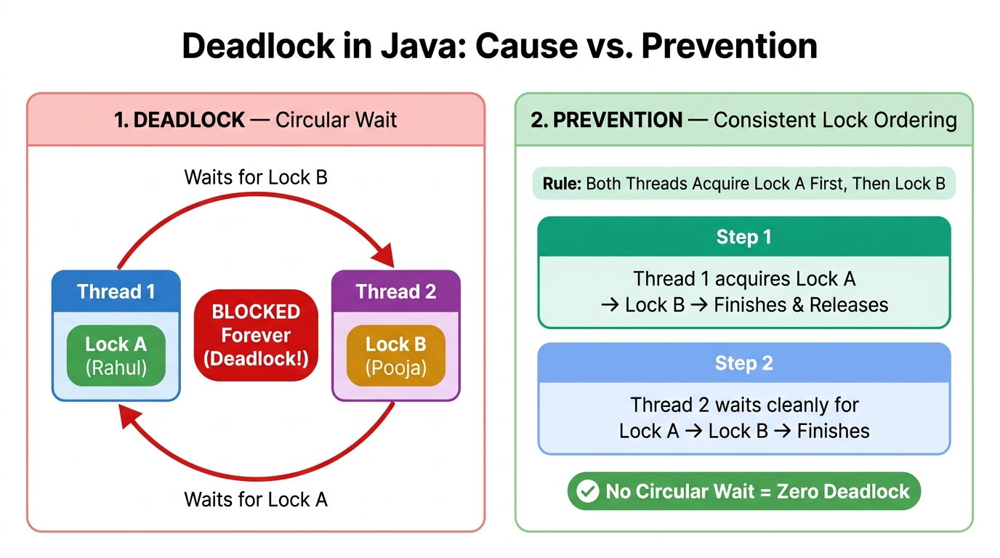

When synchronization protects a single account, it stops race conditions. When two threads acquire two locks in opposite order, they freeze each other forever. Learn how deadlock happens and every precaution to prevent it.
A deadlock occurs when two or more threads are permanently blocked because each thread is holding a lock that another thread needs, and neither thread can proceed until the other releases its lock.
Continuing our bank account story with two separate accounts:
Thread 1 (Transfer-1): Transfer ₹2,000 from Rahul → Pooja
Locks Rahul (A) first, then tries to lock Pooja (B).
Thread 2 (Transfer-2): Transfer ₹1,500 from Pooja → Rahul
Locks Pooja (B) first, then tries to lock Rahul (A).
DeadlockException.BLOCKED state forever, so the JVM never terminates.Everyday Indian road analogy: Think of two cars meeting nose-to-nose on a narrow single-lane flyover where neither car has space to reverse. Neither driver is broken, yet neither can move forward until the other gives way — both stay stuck indefinitely.
Deadlock is triggered by an unfortunate thread interleaving where locks are acquired in opposite order:
| Step | Thread 1 (Transfer-1: Rahul → Pooja) | Thread 2 (Transfer-2: Pooja → Rahul) | Lock A (Rahul) | Lock B (Pooja) |
|---|---|---|---|---|
| 1 | Acquires Lock A (Rahul) | — | Held by T1 | Free |
| 2 | Working / paused briefly | Acquires Lock B (Pooja) | Held by T1 | Held by T2 |
| 3 | Tries to acquire Lock B → BLOCKED | Working / paused briefly | Held by T1 | Held by T2 |
| 4 | Still BLOCKED forever (keeps holding A) | Tries to acquire Lock A → BLOCKED forever | DEADLOCK! Circular Wait Cycle formed (T1 ↔ T2) | |

Lock A (Rahul) and waits for Lock B, while Thread 2 holds Lock B (Pooja) and waits for Lock A — creating a closed cycle where both remain BLOCKED forever.
Right (How Ordering Fixes It): When both threads strictly acquire Lock A before Lock B, no cycle can form and both transfers finish cleanly.
Computer science proves that a deadlock happens if and only if all 4 conditions hold simultaneously. Eliminating even one condition makes deadlock impossible:
Locks cannot be shared at the same time — only one thread can own an object's synchronized monitor lock at any moment.
A thread keeps holding at least one acquired lock (e.g., Lock A) while sitting blocked waiting to acquire a second lock (Lock B).
The JVM never forcibly strips a monitor lock away from a thread. Only the owning thread can release its lock by exiting the synchronized block.
A closed chain exists: Thread 1 waits for a resource held by Thread 2, and Thread 2 waits for a resource held by Thread 1 (T1 → T2 → T1).
Look how innocent the transfer method below appears — yet because parameters are swapped (transfer(rahul, pooja) vs transfer(pooja, rahul)), nested locking locks in reverse order:
class TransferAccount {
final String owner;
int balance;
TransferAccount(String owner, int balance) {
this.owner = owner;
this.balance = balance;
}
}
public class BankDeadlockDemo {
static void unsafeTransfer(TransferAccount from, TransferAccount to, int amount) {
synchronized (from) { // Thread acquires 1st lock
System.out.println(Thread.currentThread().getName() + " locked " + from.owner);
try { Thread.sleep(50); } catch (InterruptedException ignored) {}
System.out.println(Thread.currentThread().getName() + " waiting for " + to.owner + "...");
synchronized (to) { // Deadlock happens right here!
from.balance -= amount;
to.balance += amount;
System.out.println("Transferred Rs." + amount);
}
}
}
public static void main(String[] args) {
TransferAccount rahul = new TransferAccount("Rahul", 10000);
TransferAccount pooja = new TransferAccount("Pooja", 8000);
// Thread 1 locks Rahul first, then waits for Pooja
new Thread(() -> unsafeTransfer(rahul, pooja, 2000), "Transfer-1").start();
// Thread 2 locks Pooja first, then waits for Rahul (REVERSE ORDER!)
new Thread(() -> unsafeTransfer(pooja, rahul, 1500), "Transfer-2").start();
}
}BankDeadlockDemo intentionally deadlocks — both threads print "waiting for ..." and hang forever. Press Ctrl + C (or Stop in your IDE) to terminate it.
Switch between Unsafe Order and Safe Lock Ordering (ID 101 → 102), then click Next Step → to watch thread states and lock ownership change:
Transfer-1 State: READY
Transfer-2 State: READY
Preventing deadlocks requires deliberate discipline whenever threads acquire multiple locks. Follow these core precautions:
Whenever multiple locks must be acquired together, establish one strict global rule so every thread always acquires them in the same order.
How to do it in Java: Compare unique account IDs (from.getId() < to.getId()) so Transfer-1 and Transfer-2 both lock ID 101 (Rahul) first and ID 102 (Pooja) second. If IDs are unavailable, sort using System.identityHashCode(obj) with a tie-breaker lock for hash collisions.
Never acquire a second lock inside an already-held synchronized block unless strictly required for atomicity. Keep synchronized sections minimal: lock Resource A, read/update it quickly, exit and release Lock A, and only then acquire Lock B.
ReentrantLock.tryLock(timeout)Unlike synchronized (which blocks forever without timeout), java.util.concurrent.locks.ReentrantLock lets a thread wait up to a bounded time:
lockB.tryLock(50, TimeUnit.MILLISECONDS).false, immediately release lockA.unlock() inside finally, pause briefly with slight random jitter, and retry later cleanly.Calling an external callback, listener, repository hook, or non-final overridden method while holding a lock is dangerous — that external method might acquire another lock in reverse order without your knowledge. Compute or copy state under the lock, release the lock, then invoke the external call.
String literals (e.g. synchronized("LOCK")) are interned globally in the String Constant Pool, and small boxed values (Integer.valueOf(10)) are cached! Completely unrelated classes could synchronize on the exact same instance and create hidden deadlocks. Always use private final Object lock = new Object(); or clear domain entities.
Use lock-safe utilities from java.util.concurrent such as ConcurrentHashMap, AtomicInteger, and BlockingQueue instead of manual nested synchronization. Also beware of Thread-Starvation Deadlock in an ExecutorService: never let a task running inside a small fixed thread pool block waiting for a sub-task submitted to that same pool.
jps to find the Java Process ID (PID), then run jstack <pid> in your terminal. The JVM thread dump automatically inspects monitor chains and prints "Found one Java-level deadlock:" with exact class names and line numbers! Programmatically, you can also check ManagementFactory.getThreadMXBean().findDeadlockedThreads().
Below is a complete, runnable Java 17 program showing both Consistent Lock Ordering (synchronized on sorted account IDs) and Timed Backoff Locking (ReentrantLock.tryLock with random jitter backoff):
import java.util.concurrent.TimeUnit;
import java.util.concurrent.locks.ReentrantLock;
public class DeadlockPreventionDemo {
static class BankAccount {
private final int id;
private final String owner;
private int balance;
private final ReentrantLock lock = new ReentrantLock();
public BankAccount(int id, String owner, int balance) {
this.id = id;
this.owner = owner;
this.balance = balance;
}
public int getId() { return id; }
public String getOwner() { return owner; }
public int getBalance() { return balance; }
public void debit(int amount) { balance -= amount; }
public void credit(int amount) { balance += amount; }
}
// PRECAUTION 1: Consistent Global Lock Ordering (using synchronized)
public static void transferOrdered(BankAccount from, BankAccount to, int amount) {
if (from.getId() == to.getId()) {
return; // Self-transfer guard
}
// Global ordering: always acquire the lower account ID lock first
BankAccount firstLock = (from.getId() < to.getId()) ? from : to;
BankAccount secondLock = (from.getId() < to.getId()) ? to : from;
synchronized (firstLock) {
try { Thread.sleep(40); } catch (InterruptedException e) { Thread.currentThread().interrupt(); }
synchronized (secondLock) {
if (from.getBalance() >= amount) {
from.debit(amount);
to.credit(amount);
System.out.println(" [Ordered][" + Thread.currentThread().getName() + "] Transferred Rs."
+ amount + " from " + from.getOwner() + " to " + to.getOwner());
} else {
System.out.println(" [Ordered][" + Thread.currentThread().getName() + "] Insufficient balance for " + from.getOwner());
}
}
}
}
// PRECAUTION 2: Timed tryLock() with Backoff (using ReentrantLock)
public static boolean transferWithTimeout(BankAccount from, BankAccount to, int amount) {
if (from.getId() == to.getId()) {
return false;
}
for (int attempt = 1; attempt <= 6; attempt++) {
boolean gotFirst = false;
boolean gotSecond = false;
try {
gotFirst = from.lock.tryLock(50, TimeUnit.MILLISECONDS);
if (gotFirst) {
Thread.sleep(20);
gotSecond = to.lock.tryLock(50, TimeUnit.MILLISECONDS);
if (gotSecond) {
if (from.getBalance() >= amount) {
from.debit(amount);
to.credit(amount);
System.out.println(" [tryLock][" + Thread.currentThread().getName() + "] Transferred Rs."
+ amount + " from " + from.getOwner() + " to " + to.getOwner()
+ " (attempt " + attempt + ")");
}
return true;
}
}
} catch (InterruptedException e) {
Thread.currentThread().interrupt();
return false;
} finally {
if (gotSecond) to.lock.unlock();
if (gotFirst) from.lock.unlock();
}
// Randomized backoff avoids lockstep retries (prevents Livelock)
try { Thread.sleep(15 + (long) (Math.random() * 35)); }
catch (InterruptedException e) { Thread.currentThread().interrupt(); return false; }
}
System.out.println(" [tryLock][" + Thread.currentThread().getName() + "] Could not complete transfer safely after retries.");
return false;
}
public static void main(String[] args) throws InterruptedException {
System.out.println("==========================================================");
System.out.println(" DEADLOCK PREVENTION IN JAVA: SAFE TRANSFERS ");
System.out.println("==========================================================");
// PART 1: Safe Global Lock Ordering
BankAccount rahul = new BankAccount(101, "Rahul", 10000);
BankAccount pooja = new BankAccount(102, "Pooja", 8000);
System.out.println("\n--- Part 1: Consistent Lock Ordering (ID 101 -> ID 102) ---");
Thread t1 = new Thread(() -> transferOrdered(rahul, pooja, 2000), "Transfer-1");
Thread t2 = new Thread(() -> transferOrdered(pooja, rahul, 1500), "Transfer-2");
t1.start(); t2.start();
t1.join(); t2.join();
System.out.println(" Final Balances -> Rahul: Rs." + rahul.getBalance() + ", Pooja: Rs." + pooja.getBalance());
// PART 2: Timed Locks with tryLock()
BankAccount amit = new BankAccount(201, "Amit", 6000);
BankAccount neha = new BankAccount(202, "Neha", 5000);
System.out.println("\n--- Part 2: ReentrantLock tryLock() with Timeout & Retry ---");
Thread t3 = new Thread(() -> transferWithTimeout(amit, neha, 1000), "Transfer-3");
Thread t4 = new Thread(() -> transferWithTimeout(neha, amit, 500), "Transfer-4");
t3.start(); t4.start();
t3.join(); t4.join();
System.out.println(" Final Balances -> Amit: Rs." + amit.getBalance() + ", Neha: Rs." + neha.getBalance());
System.out.println("\n==========================================================");
System.out.println("All concurrent opposite transfers completed without deadlock!");
System.out.println("==========================================================");
}
}Deadlock is part of three classic liveness hazards in Java concurrency. Notice how they differ in thread state and CPU usage:
| Hazard | Thread State | CPU Usage | Why It Happens | How to Prevent |
|---|---|---|---|---|
| Deadlock | BLOCKED forever |
~0% (idle hang) | Circular wait: threads hold locks and wait forever for each other's locks. | Consistent lock ordering, no nested locks, tryLock(timeout). |
| Starvation | RUNNABLE / Waiting |
Moderate–High | One thread is perpetually denied CPU or lock access because greedy/high-priority threads keep cutting ahead. | Use fair locks (new ReentrantLock(true)), avoid priority abuse, release locks quickly. |
| Livelock | RUNNABLE (active!) |
High (~100% loop) | Threads are not blocked — they actively retry/back off in lockstep (like two polite people stepping side-to-side in a corridor) and make zero progress. | Add randomized delay (jitter) before retrying tryLock(), as shown in Part 2 above. |
No. At least two locks (or resources) acquired by two threads are required for Circular Wait. Even if one thread re-enters its own lock, Java locks are reentrant, so a thread cannot deadlock with itself on a single monitor.
Acquiring locks is completely legal at runtime, and deciding whether a blocked wait will resolve or never resolve is expensive in general. Instead of throwing automatically, Java gives tools like jstack and ThreadMXBean to diagnose deadlocks.
Consistent Global Lock Ordering (e.g., always locking lower id first). Because every thread requests locks in the exact same sequence, a Circular Wait cycle can never form.
unlock() inside a finally block when using ReentrantLock?Unlike synchronized, ReentrantLock does not unlock automatically when leaving the block. Putting unlock() inside finally ensures locks are released even if an exception is thrown.
DeadlockPreventionDemo use Math.random() inside the tryLock retry delay?Adding randomized jitter prevents both threads from timing out and retrying in identical lockstep — which prevents a livelock.
Opposite Lock Order → Circular Wait → Deadlock!
When locking two or more resources, always enforce one strict global lock order, avoid unnecessary nested locks and alien calls inside synchronized blocks, or use ReentrantLock.tryLock(timeout) with randomized retry backoff so your threads never freeze forever.